いろんな写真てんこ盛り [梅吉]
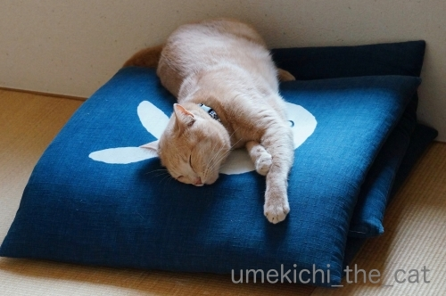
ぐんにゃりした寝相の梅吉さん。
窓辺にある座布団の上は風を感じられて気持ちが良いのかな。
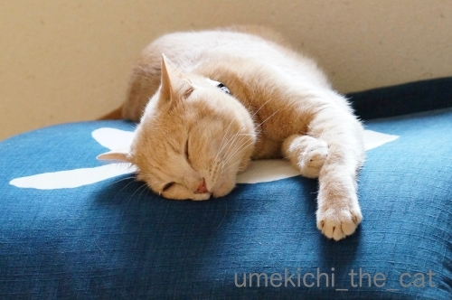
![[猫]](https://blog.ss-blog.jp/_images_e/101.gif) くかぁ〜
くかぁ〜
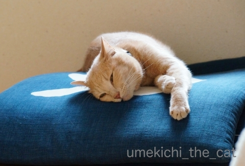
ちろりっ
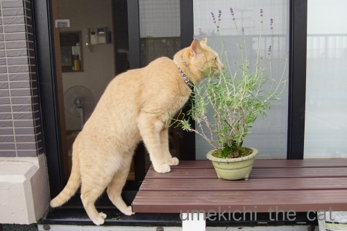
上の写真の向こう側はここです。
踏ん張りながらラベンダーをくんくんしますよ。
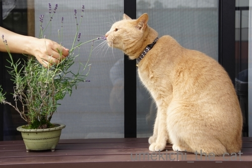
柑橘系、ミント系、コーヒーの匂いなど
にゃんこそれぞれに嫌う匂いがあると思いますが・・・
梅吉はあまり匂いに敏感ではないのか何を嗅がせても割と平気。
嫌な顔するのは虫刺されの薬の「ツ〜ン」とした匂いくらいかな(⌒-⌒;
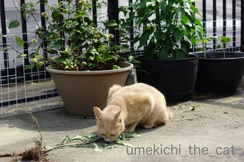
引き抜かれた雑草の匂いもチェック。
後ろのもさもさ茂った植物たち。一番手前はクレマチス。
花が咲き終わるとモワモワした緑の玉みたいなのが出来ます。
このモワモワの先端にタネがついていて風に乗って飛んで子孫を増やしていくようですよ。
タンポポみたいな感じ？
その後ろは「インドジン・ウソツカナイ」。ずいぶん大きくなって花が咲いてます。
順調にいけば沢山トウガラシが収穫できそう！
一番奥の鉢は「オクラ」です。オクラの花って可愛いんですよ＾＾
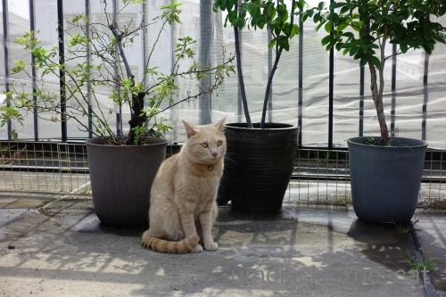
時々カラスが梅吉をからかうように低く飛んで行きます。
むかつくわぁ〜
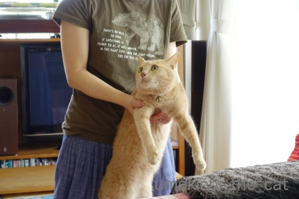
消防設備点検もありました。
長い検査棒をガン見してますw
こうやって抑えていないとおっちゃんの靴下の匂いを嗅ぎに行くんです(-_-メ)
や〜め〜て〜〜〜〜〜〜〜っ。
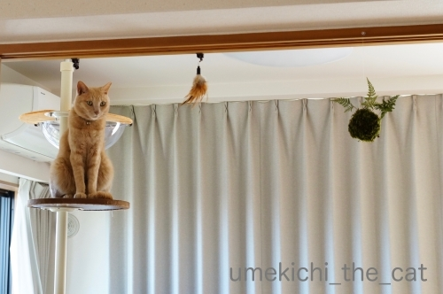
鴨居にフックをつけています。
摘んだラベンダーをここに下げて乾燥していたのですが
案の定梅吉アタックに会いました(*>艸<)
それがとっても楽しそうだったのでじゃらしの先端につけるおもちゃとチェンジ。
（真ん中に見える羽）
おもちゃになるとあまり食いつかないあるある発動(-_-メ)
一番右端はおっとが作った苔玉釣り忍です。
時々梅吉が見てますがここまでは届くまい！
どうと言うことのない写真ですがちょっと気に入っている一枚です＾＾
 ↑ガブッと一押し↑
↑ガブッと一押し↑
週末はファイターズの応援に行きました。
ファイターズでわかるかな？
北海道日本ハムファイターズです。大谷君のいたチームですよー。
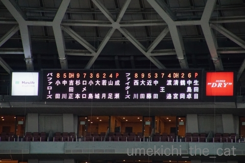
去年はタイミングが合わなくて一度も球場で観戦せず。２年ぶりになります。
野球にぜーんぜん興味のない方、パなんて知らんわっw
と言う方も中田と清宮はご存知ですよね？ね？？
「王」は「ワン」さんです。今季加入の助っ人。
台湾プロ野球出身のすごい人なんですよ。イチロー級。
台湾時代はシーズン通算打率４割超えを二回達成してます。
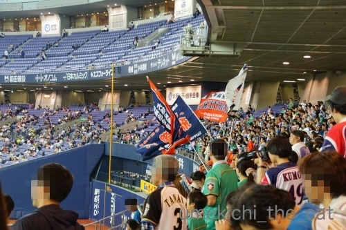
試合前の応援席。
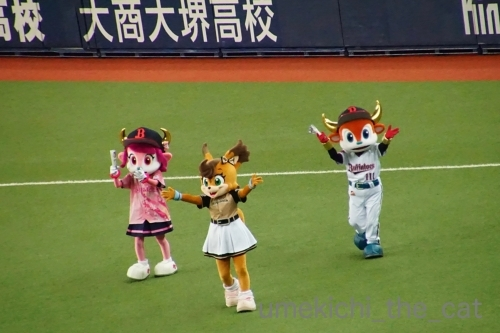
ファイターズのメインのマスコットはBB（びーびー）っていうヒグマ（笑）なんですが
（毎年、年棒は荒巻鮭で支給wwwww）
この日はエゾリスのポリーちゃんが来てました。
真ん中のスカートの子です。
試合は引き分け。
もうダメかなーと思ったらHRで追いつく
ファイターズファンにとっては見ごたえのある試合になりました＾＾
ぐんにゃりした寝相の梅吉さん。
窓辺にある座布団の上は風を感じられて気持ちが良いのかな。
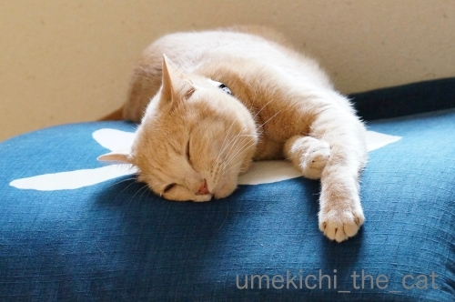
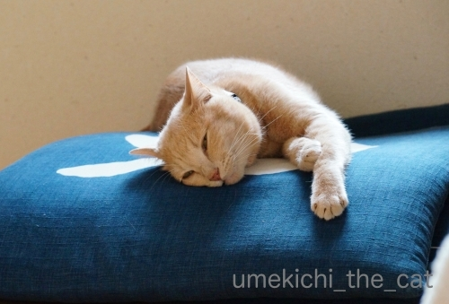
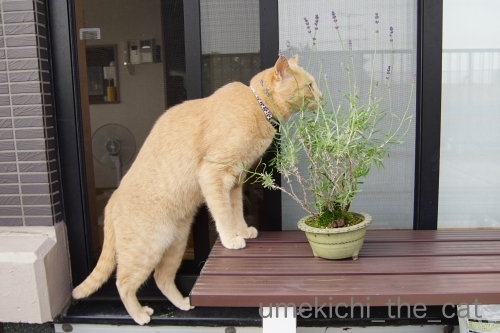
上の写真の向こう側はここです。
踏ん張りながらラベンダーをくんくんしますよ。
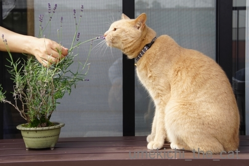
柑橘系、ミント系、コーヒーの匂いなど
にゃんこそれぞれに嫌う匂いがあると思いますが・・・
梅吉はあまり匂いに敏感ではないのか何を嗅がせても割と平気。
嫌な顔するのは虫刺されの薬の「ツ〜ン」とした匂いくらいかな(⌒-⌒;
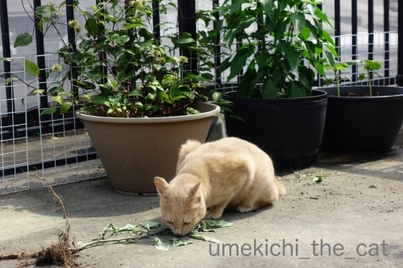
引き抜かれた雑草の匂いもチェック。
後ろのもさもさ茂った植物たち。一番手前はクレマチス。
花が咲き終わるとモワモワした緑の玉みたいなのが出来ます。
このモワモワの先端にタネがついていて風に乗って飛んで子孫を増やしていくようですよ。
タンポポみたいな感じ？
その後ろは「インドジン・ウソツカナイ」。ずいぶん大きくなって花が咲いてます。
順調にいけば沢山トウガラシが収穫できそう！
一番奥の鉢は「オクラ」です。オクラの花って可愛いんですよ＾＾
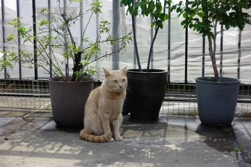
時々カラスが梅吉をからかうように低く飛んで行きます。
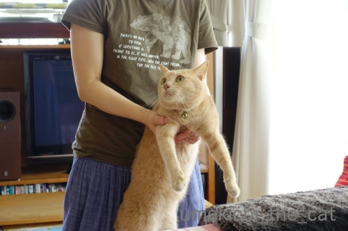
消防設備点検もありました。
長い検査棒をガン見してますw
こうやって抑えていないとおっちゃんの靴下の匂いを嗅ぎに行くんです(-_-メ)
や〜め〜て〜〜〜〜〜〜〜っ。
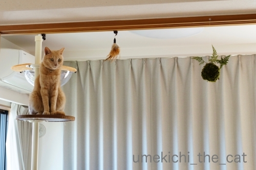
鴨居にフックをつけています。
摘んだラベンダーをここに下げて乾燥していたのですが
案の定梅吉アタックに会いました(*>艸<)
それがとっても楽しそうだったのでじゃらしの先端につけるおもちゃとチェンジ。
（真ん中に見える羽）
おもちゃになるとあまり食いつかないあるある発動(-_-メ)
一番右端はおっとが作った苔玉釣り忍です。
時々梅吉が見てますがここまでは届くまい！
どうと言うことのない写真ですがちょっと気に入っている一枚です＾＾
週末はファイターズの応援に行きました。
ファイターズでわかるかな？
北海道日本ハムファイターズです。大谷君のいたチームですよー。
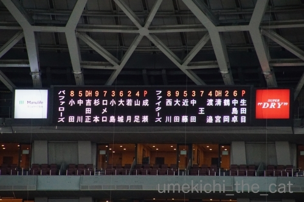
去年はタイミングが合わなくて一度も球場で観戦せず。２年ぶりになります。
野球にぜーんぜん興味のない方、パなんて知らんわっw
と言う方も中田と清宮はご存知ですよね？ね？？
「王」は「ワン」さんです。今季加入の助っ人。
台湾プロ野球出身のすごい人なんですよ。イチロー級。
台湾時代はシーズン通算打率４割超えを二回達成してます。
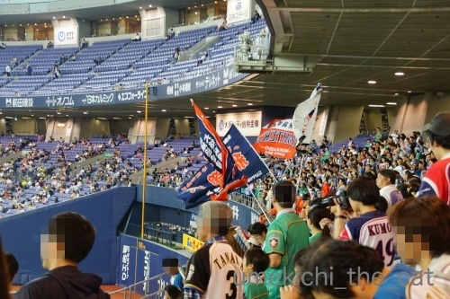
試合前の応援席。
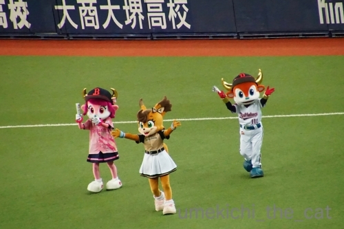
ファイターズのメインのマスコットはBB（びーびー）っていうヒグマ（笑）なんですが
（毎年、年棒は荒巻鮭で支給wwwww）
この日はエゾリスのポリーちゃんが来てました。
真ん中のスカートの子です。
試合は引き分け。
もうダメかなーと思ったらHRで追いつく
ファイターズファンにとっては見ごたえのある試合になりました＾＾

カフェオレ色の梅吉

梅吉 2023年8月10日 永眠


梅吉と出会った譲渡会

犬猫の理由なき殺処分ゼロ
妄想広告
UMEKICHI 光

爆発的に早い！
時々攻撃的！
Thanks to Mr.Boss365
爆発的に早い！
時々攻撃的！
Thanks to Mr.Boss365

苔玉に手が届かない梅吉さんの恨めしそうな顔がまた可愛い♪
ここまでのジャンプはさすがに無理？
by nachic (2019-06-03 00:29)
し、白目? と思ったら違いましたね。
オクラの花も見たいしクリアカップの梅吉さんも見たいです。
by zombiekong (2019-06-03 00:44)
オクラの花、僕も好きです
初めて見たときにあの実とイメージが繋がらなくて
驚きました
by 藤並 香衣 (2019-06-03 02:11)
座布団の上も気持ち良さそうだニャ～
日本ハムは、良い選手が入団するのにどんどん排出もしちゃうよね（ﾟ□ﾟ）
by 英ちゃん (2019-06-03 03:54)
知らない人でも平気なんですね。
だから拉致が必要＾＾；
by ぽちの輔 (2019-06-03 06:14)
梅吉さん、のんびりおっとりさんな感じ。
しかし、消防設備点検のおじさんの靴下のにおいをかぎにいくとは！^m^
あの音とかでビビらないのかしら。大物だわー。
野球は(今は)全然見ないけど、チームは全部わかりますよん。
by ChatBleu (2019-06-03 06:28)
野球もいよいよ交流戦。
今年もパのチームにぼこぼこにされるんかなー(^_^;)
by よーちゃん (2019-06-03 06:52)
梅吉さん、消防点検も平気なんですねぇ(°_°)
さすが「漢 梅吉さん」です( ´ ▽ ` )ﾉ
うちのガールズはパニクりまくりですw
鴨居のラベンダー、梅吉さんアタックで
おもちゃに変えた瞬間からノールック・・・ありますよねぇ(⌒-⌒; )
おもちゃも色々用意してるのに、なぜに違うもの（時にはゴミw）の方が、
興味を引いて楽しそうなんでしょう(⌒-⌒; )
by ニッキー (2019-06-03 06:54)
梅吉さん、靴下臭いチェック重要なのかにゃあ^^
by ニコニコファイト (2019-06-03 07:03)
梅吉さん いつも表情いいなぁ〜♪
by チャー (2019-06-03 09:06)
ぐにゃりとした寝姿！サイコーです(#^.^#)
点検の人の靴下を（笑
って笑っていられない状況ですね(;^_^A
梅吉アタック！！
おもちゃじゃないから
気になるんですよねぇ～♪
by きぃ (2019-06-03 09:51)
梅吉さん、色々と匂いチェックをしていますね！
そういえばオリックスはブルーウェイじゃなくバッファローズに変わったの忘れてた(^^)
by ma2ma2 (2019-06-03 10:58)
こんにちは。
梅吉君、素敵な座布団の上で寛いでますね。ヨダレ大丈夫ですか？（笑）
座布団・絵柄も良さそうだ・・・。夏に向けググりたいですね。
広いバルコニーで植物観察も良いですね。
一般的に「柑橘系」はニャンズ嫌いです。
梅吉君の祖先は、お花多い自然環境の良い所で生活していた可能性あります。
クレマチスの匂い？小生猫、全く興味を示さなかった花です（笑）
最近、野球観戦してないです。ハーフタイムで歌を熱唱？したいです！？(=^･ｪ･^=)
by Boss365 (2019-06-03 13:25)
オクラって、じつは北海道から出てきてから知ったんですよ、わたしｗｗ
実家に居た頃は食卓にあがったことがなかったのー。
初めてスーパーでみたとき、ししとうみたいなもの？なんて思って買ったのよ。
あのねばねばがクセになって、いっぺんに好きになった〜(笑)
梅吉くん、青い座布団が似合うね！！
by リュカ (2019-06-03 14:50)
座布団の上に乗っているとどうしても
『笑点』を想像して、頭の中にあの
音楽が流れます(*´ゝ艸･`)ﾌﾟﾌﾟ
気持ちよさそうに寝ているけど、ちょっかい
出したくなっちゃうなぁぁ(*￣ー￣*)ﾆﾔﾘｯ
えーー？！梅ちゃんも臭いフェチですか？？
うちのもオヤジ(父)の靴下が大好物だったり
します。嗅ぎに行ったら、コラーと叱りますけど＾＾
球場、これは京セラドームですか？？
最近野球の生観戦していないです＾＾
by カトリーヌ (2019-06-03 14:53)
梅吉さんは柑橘系、ミント系もクンクンするんですね。うちの猫は全くダメでした。さすが梅吉さん、好奇心旺盛ですね。
でも、靴下の匂いはうちの猫も好き？好きでしたけど(^^;)
by kou (2019-06-03 16:53)
ふかふかお座布団の上で、梅吉さんから白耳が生えてるみたい(*^▽^*)
鴨居のオモチャ、楽しそうですね♪
苔球を狙ってカフェオレ色のモフモフがムササビのように飛ぶ姿を妄想してしまいました！！
こてつが子猫の頃、吊ってあるものは悉く破壊されたので、現在吊り物がないんですよね～。
消防点検の人も猫のいる家でこんなに歓迎された経験ないと思いますよ(^▽^;)
by ゆきち (2019-06-03 20:52)
何でもチェックですね^^;
猫さんのチェックは、念入りですね。
時々私の部屋にチェックに来ます。
チェックが終わると、さっさと去っていきます＾＾
by riverwalk (2019-06-03 21:00)
座布団の上が気持ちよさそうです(#^.^#)おばちゃんが添い寝してあげるよ～
by palpal (2019-06-03 21:14)
座布団の上でお昼寝、気持ち良さそう♪
見ているだけで和みます。
ちなみに、私が幼少だった頃、こんな風に座布団に顔をつけて寝たら、よくヨダレのしみが出来たものです。^^;ｷﾀﾅｲﾅ
「インドジン・ウソツカナイ」、やっぱりすごい名前です！
でもなんで”インディアン”じゃないのかな。
野球観戦、行ったことありませんが、球場で飲むビールは格別らしいですね。^^)
by yes_hama (2019-06-03 21:43)
お座布団の生地が気持ちよさそうですね。
梅吉さんは、それをご存知！
接触性皮膚炎になった時に植木の土なども対象になり、
処分しました。
で、お花を買うことになりました。
緑色の鉢達、ベランダで梅吉さんと撮られて
幸せそうですね。
梅吉さん、いつの日か苔玉を狙って、
ジャンプしそうな予感です。
おっちゃんの靴下の臭いの後にスリスリされては嫌ですもの、押さえておいて正解です（笑）
日本ハムファイターズ、王さん以外は知ってましたよ。
皆さん有名ですね。
カラス、相手にしない方が良いですよ。
仕返しをするそうです。
by kiki (2019-06-04 15:37)
どの写真って聞かれたら、
やっぱり、最後の高い所かな〜^ ^
by 小松達也 (2019-06-04 17:19)
座布団の上 本当に気持ちいいんですね！！
梅吉さん可愛い寝顔可愛いです(^^♪
オクラの花以外に綺麗なんですよね！！
花は綺麗で実は食べられて匂いは・・・(^^)
by 50oyaji (2019-06-04 21:36)
へぇ〜！ラベンダーの香りって結構きついのに大丈夫なんですね。
（うちの面々はたぶん全員ダメだと思います）
広いお庭で散策できて、楽しそうで羨ましいです。
そしてネコタワー、使いこなしてますね^^
by Ja-Kou66 (2019-06-04 23:47)
初夏らしい光景、梅吉さんの寝姿、気持ちよさそう～！
いろんな鉢植えがあるんですね～苔玉、すてき～＾＾
インドジン、ウソツカナイって？？
野球はほとんど知りません。イチローと大谷くん、清宮までは知ってるけど＾＾；
うちの猫たちは歴代、来客があるとひとまずだーっと逃げましたが、そろそろと様子を見に戻り、業者さんには意外と近づいてました。変に構われないとわかってるのかな？
梅吉さんは靴下の匂いフェチ？＾＾
by sana (2019-06-05 15:40)
純和風座布団で脱力ガン寝の梅吉さん
お洋服がヌードカラーだから和洋中何にでもマッチしますね(^^
梅吉さんに座布団枚♪
広いベランダーでラベンダー回文みたいですが(笑
インドジン、ウソツカナイという植物があるんですか？
猫はいい香りが好きではないでしょうか？
うちの熟女らは洗濯物の香りとか好きみたいです。
Naoちゃんは私が歯磨きしていると寄ってくるのでミントの香りも好きらしい。
一瞬渋い顔をしつつも、もっともっとと手で催促します癖になる香り？
日本ハムファイターズ？は札幌の球団でしたね(^^
by marimo (2019-06-05 16:03)
nachicさん＞
苔玉へのジャンプ、幼い頃だったらチャレンジしたと思いますが
４ちゃいの大人の漢は無茶しないようですよwww
zombiekongさん＞
白目を期待させてしまいましたか！失礼しました(*>艸<)
オクラの花はそのうちご披露できますがクリアカップはいつになるか・・・
とりあえずこの夏が勝負だと思ってますw
藤浪 香衣さん＞
あの鮮やかな黄色い花は目を引きますよね−！
うまく咲いてくれるか（実がなるか）楽しみです♪
英ちゃんさん＞
ファイターズ、年棒が嵩むようになるとどんどん出しちゃいますよw
まだ十分使えるうちに排出するので
他球団でも活躍している姿を見られるのは嬉しいものです＾＾
早めの排出にはファンも慣れっ子で「次は誰だ？」なんて
憶測も飛び交いますwww
ぽちの輔さん＞
知らない人＝梅吉まっしぐら、です(⌒-⌒; )
ChatBleuさん＞
のんびりまったりさんな時と遊んでモードの時の落差が激しくてw
設備点検、あの音には背中の毛を「もわっ」（ぶわっ程ではないの）
と立ち気味にして警戒はするのですが
それよりも知らない人への好奇心の方が強いみたいです。
点検のおっちゃんがベランダの「オリール」（笑）をチェックしに外に出たら
「あんた どこいくんやー！！」って
後追いだかなんだかわからない雄たけびあげてました(⌒-⌒; )
よーちゃん＞
はい！
ぼこぼこにして今年もパが上位5位くらいを（爆）占めますよ！！
今年はねー、阪神戦が甲子園であるのですよ。（行かないけど）
VS阪神戦初体験の若手選手が観客のヤジにビビっちゃわないか心配です(*>艸<)
ニッキーさん＞
消防点検、毎回今回はおとなしく見ててくれるかな・・・？
と淡い期待を抱きますがその都度玉砕です(⌒-⌒; )
手を離すと検査のおっちゃんの足めがけてまっしぐらー！
ほんと勘弁して欲しいですw
鴨居のおもちゃを輪ゴムに変えてみたら・・・
目の色変えて取ろうとしていましたよ。どうして輪ゴムなんかに〜。
食べようとするのですぐにおもちゃに戻しました。
そしてつまらなさそうな顔されました；；
ニコニコファイトさん＞
靴下チェック、私にはしないんですよw
するのはおっとと業者のおっちゃん。
おっちゃんの靴下が好きだなんて嫌だーーーーー！！！！！
チャーさん＞
梅吉はホント表情豊かなんですよ♪
きぃさん＞
これからの季節の寝姿のキーワードは
ぐにゃりとかびろーんとかになりそうですw
おっとの靴下でもちょっとねって思うのに
点検の人のなんてねー！絶対いや〜(⌒-⌒; )
ma2ma2さん＞
およよ、
ブルーウェーブ→バッファローズ結構経ちますよねw
私はブルーウェーブ時代はあまり知りません。イチローくらい？
これを機に情報更新してくださいませ(^_－)☆
Boss365さん＞
あら、お座布団をお褒めいただいて(〃▽〃)
梅吉の鼻水およびニンゲンのヨダレ（時々枕にして昼寝w）
付いていると思われますが洗濯してるので大丈夫ですw
最近の野球は各球団の歌はもちろんのこと
イニングの間に「踊れ」とか「手拍子」とか要求されるので（笑）
真面目に参加していると観客も結構忙しいですよwww
リュカさん＞
オクラって私たちが結構大人になってから日本に入って来た食べ物かなぁ。
私も子供の頃食べたことなかったです。
大学生の頃のお弁当に（笑。作ってもらってた。笑）入ってた記憶があるから
リュカさんが北海道から出た頃と一致するかな。
結婚してお弁当作ってる時期は私も重宝して使ってました。
加熱は短時間で楽だしカサが減らないから（爆）穴埋めに便利ー！
おかか和えとかしてましたよw
座布団、置いてる場所もあるのか光が反射するので
写真写りがいいのだ(≧▽≦)
カトリーヌさん＞
座布団でどうしてもあの音楽、わかります！
どうぞ歌ってくださいw「ぱふ〜」って合いの手入れますから(*>艸<)
で、梅吉はどんなにがんばって面白いことしても
「座布団３枚の男」なのですよーw
わー！！おっちゃん臭い好きがここにもー(^_^;)
梅吉は私の靴下の匂いは嗅ぎませんがおっとのは大好き。
よそのおっちゃんは物珍しさもあるのかもうまっしぐらで ( ･̆ˍ･̆ )
野球、球場書くの忘れちゃいました〜w
京セラドームです。
土曜日にハム戦に当たると毎年行ってます＾＾
甲子園球場は一回だけ行ったことありますよw
そしていろんな意味でもう行かなくていいやって思いましたww
kouさん＞
幼い頃キッチンでのイタズラがひどかったので
いろんなものを嗅がせて追い払おうとしたのですが・・・
（無駄な努力だったw）
そのせいで嗅覚が鍛えられて（？）
苦手な匂いがなくなっちゃったのかもしれませんw
ああ、靴下好きがここにも・・・
kouさんの靴下限定かしらー(*>艸<)
ゆきちさん＞
カフェオレ色のムササビが滑空・・・可能性は０とは言えないので
ちょっとドキドキ(⌒-⌒;
長時間家を開けるときは苔玉は外に出しておこうと思いましたw
施設点検、配管掃除、エアコン掃除などなど・・・
全ての人に絡もうとするので目が離せなくて。
スリスリ歓迎だけなら「うちの子可愛いでしょ！」と鼻の穴膨らませちゃいますが
靴下の匂いはねーーーーーー！！！！勘弁ですwww
riverwalkさん＞
梅吉が全てをチェックしてくれるので
我が家の安全管理は万全ですよ(*>艸<)
うちはおっとの（靴下の匂いを）チェックをした後は
タックル＆プロレスになってますwww
palpalさん＞
あ〜、この場所風が通って気持ち良いのです！
私も時々梅吉と座布団共有（自慢）しながら昼寝してまーす＾＾
yes_hamaさん＞
ねこはちゃんと気持ちの良い場所がわかるんですよねー＾＾
この場所はアズ氏にとってのゼブザブのある窓辺と同じ位置づけでしょうか。
風が入って来て気持ちが良いようです。
あ！そうですよね。正しくは「インディアン嘘つかない」ですよねw
でもインディアンさんは辛いもの食べない（？）ですしー(*>艸<)
球場でのビール、勝っている試合だとさらにビールが美味しいです！
HRなんて出るとみなさんテンションが上がるようで
ビール売ってるお姉さんたちが忙しそうにしてますwww
kikiさん＞
お座布団、私の嫁入り道具なので（笑）年代物ですが
なかなか肌触りの良い生地で長持ちしてます＾＾
梅吉も気に入ってくれているようでなによりー！
接触性皮膚炎、植物も対象になるのですね・・・・
以前知人で植物に触ったらかぶれて以降あちこちに赤くなる
と言っていたのはそれだったのかしら。
色々制限やご苦労がありそうですが
kikiさんは上手く対処されているご様子＾＾
おっちゃんの靴下は・・・おっとだけにして欲しいです(⌒-⌒;
ファイターズの選手をご存知とは！！野球通でいらっしゃる♡
by ちぃ (2019-06-05 18:04)
小松達也さん＞
最後の写真に一票、ありがとうございますm(_ _)m
50oyajiさん＞
お座布団の上は風が心地良いようですよ＾＾
我が家のお昼寝スポットでもありまーす。
オクラ、花も楽しみですが実も楽しみです♪
また梅吉にクンクンしてもらわなきゃ。
Ja-Kou66さん＞
我が家のラベンダーはヘタレなのか（笑）
そんなにキツイ匂いはしないのです＾＾
梅吉が強者、というのももちろんありますがwww
ネコタワー、ベッドにしてもらおうと思ったら
鴨居にぶら下がっているものにちょっかいを出すための
足場にされるとは！！ (-_-メ)
sanaさん＞
鉢植えは（おっとの努力で 爆）日々増殖してます。
あまり増えると後々困るんですけどねwww
インドジンウソツカナイは唐辛子の品種の名前です＾＾
にゃんこ、普通来客にはとりあえず警戒しますよね・・・
梅吉は幼い頃から誰か来たらそれはもうまっしぐらで(⌒-⌒;
よその人の匂い、とりわけ靴下には執着が。
ってそういえば女性が来た時は足の匂い嗅ぎません。
男性の靴下の匂いフェチ？
おっとのも好きです0(≧▽≦)0
marimoさん＞
そうそう＾＾わりといろんな色が似合ってしまう梅吉ですwww
濃紺のお座布団は肌触りも良いので夏場のお気に入りです。
インドジンウソツカナイは唐辛子の品種名です。
梅吉も取り込んだ洗濯物の上にのったりするけど
やっぱり靴下が好きみたいで・・・おっとのも嗅ぎに行きます(⌒-⌒;
先々代ねこは洗濯カゴの中から男物のおパンツを引っ張り出してきて
その上で寝てたりしてましたよ。来客時は焦った。。。
このように、一部の猫はおっちゃんの匂いが好きなようで(*>艸<)
ファイターズは正しくは北海道の球団ですよー。
本拠地が札幌だから札幌って言われちゃうけどwww
by ちぃ (2019-06-06 17:42)